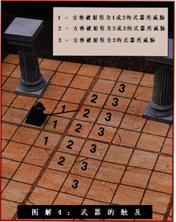

近战尺度
近战尺度
近战尺度是发生在室内、地下城里、黑暗或雾霾中的近距离战斗的默认尺度。只要战斗双方在开始时距离对方50 或60
码以内，大多数战斗地图就足以模拟以近战尺度开始的战斗。这能避免你在战斗中从远射尺度转换为近战尺度的麻烦（见后面的远射尺度）。
在近战尺度中，要注意法术和远程武器射程的单位是码，而不是英尺。投掷匕首的短射程是10 码，即30
英尺。在近战尺度的地图上，这是6 个方格。一个30 码射程的法术可以瞄准18 格远的目标。射程
大多数角色和怪物只能对处于前面的生物进行近战攻击。然而，一些武器为玩家提供额外的触及范围；还有一些怪物因为其体积的缘故能掌控更大的区域。
武器
多数长柄武器提供的范围像是远程武器的射程。一把射程为2
的长柄武器可以攻击角色前方的格子里，或是前方格子之外且与之相邻的格子的任何敌人。
有些武器被定义为射程受限的武器。锥枪和骑枪都属于这一类。这些武器可以用来攻击长度距离的方格，但是不能用来攻击位于使用者和武器矛头之间的敌人。
使用射程为2
或更远的武器和天生武器的生物不能通过被占据的方格对其后面的方格进行攻击，除非这是矛或锥枪阵的的一部分（详见于第二章）。
